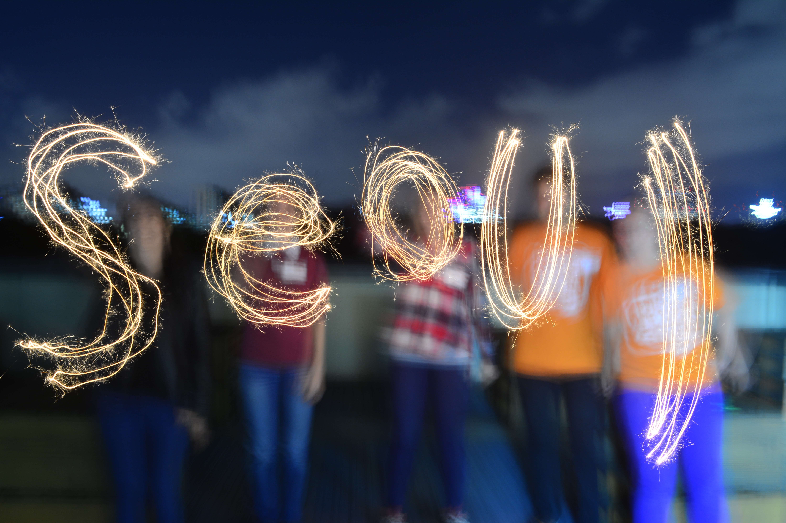

- 집-서울역(home-Seoul station)
- 서울역-더서울라이티움(Seoul station-The seouliteum)
- 더서울라이티움-김메주와 고양이들 카페(The seouliteum-Kim mejoo and cats cafe)
- 김메주와 고양이들 카페-서울역(Kim mejoo and cats cafe-Seoul station)
- 서울역-집(Seoul station-home)

1-1 집-서울역(home-Seoul station)
- 집-포항역 (택시, 18분, 6800원)
- 아침(편의점, 2900원)
- 포항역-서울역(ktx, 2시간 33분, 53600원)
- 교통카드 충전(5085원)
총 63300원
1-2 서울역-더서울라이티움(Seoul station-The seouliteum)
- 서울역-써브웨이 서울숲점 (지하철 1호선-2호선, 38분, 1250원)
- 점심(써브웨이, 7900원)
- 더서울라이티움 1(메간헤스 아이코닉 전시회, 10500원)
- 더서울라이티움 2(비투비 7주년 전시회, 30000원)
- 비투비 굿즈(비투비 7주년 전시회, 18000원)
총 58650원
1-3 더서울라이티움-김메주와 고양이들 카페(The seouliteum-Kim mejoo and cats cafe)
- 더서울라이티움-김메주와 고양이들 카페 (지하철 분당선-7호선-버스 6615, 1시간 12분, 1650원)
- 요지 딸기 라떼+말차케이크(카페, 12300원)
- 고양이 굿즈(카페, 10000원)
총 23950원
1-4 김메주와 고양이들 카페-서울역(Kim mejoo and cats cafe-Seoul station)
- 김메주와 고양이들 카페-서울역 (지하철 7호선-1호선, 1시간, 1450원)
- 물(편의점, 900원)
총 2350원
1-5 서울역-집(Seoul station-home)
- 서울역-포항역(ktx, 2시간 33분, 53600원)
- 포항역-집(택시, 18분,6500원)
총 60100원
총 208350원